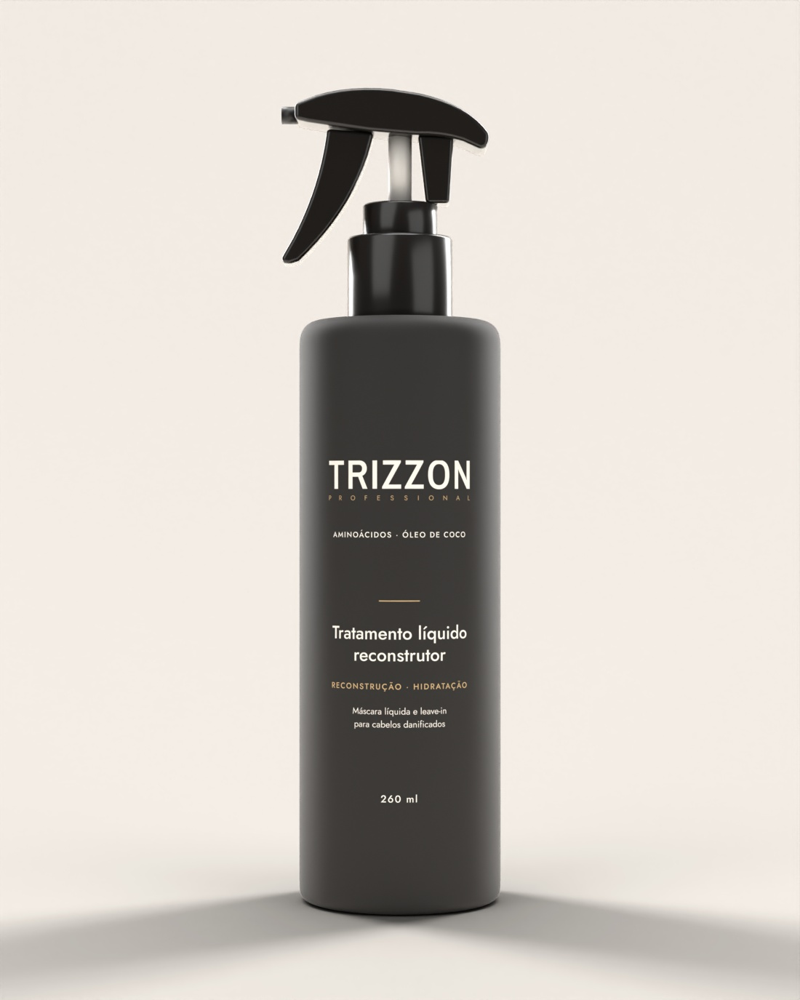

Em breve
Tratamento líquido reconstrutor
Calor, química, rotina: seu cabelo sente tudo. Máscara líquida e leave-in com proteção térmica em um só spray.

O produto
Dois usos, um spray
Máscara líquida
Depois do shampoo, deixe agir de 3 a 5 minutos e enxágue.
Leave-in
Antes do secador e da prancha, sem enxágue, com proteção térmica.
Fórmula
Reconstrói. Nutre. Protege.
Reconstrói
Queratina e aminoácidos ajudam a reconstruir a fibra.
Nutre
Óleo de coco para cabelos danificados por química, calor e rotina.
Protege
Proteção térmica contra o calor do secador e da prancha.
Em breve
O primeiro lançamento da Trizzon Professional chega aos salões.